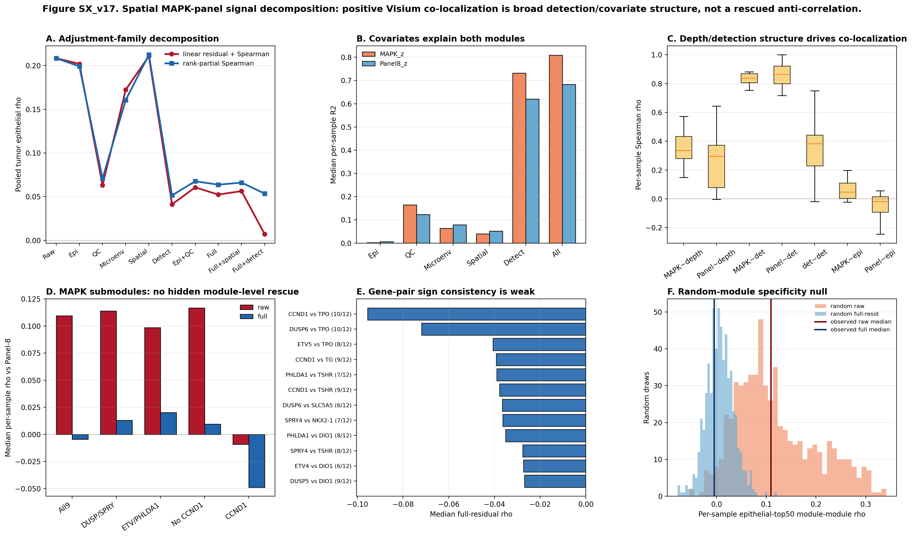

01TL;DR
No hidden rescue. Rank-partial Spearman and submodule checks do not recover the hypothesized within-spot MAPK-high / Panel-low relation. The honest result remains caveat/reserve.
Better defense. The raw positive result behaves like generic detection/covariate co-localization: random module pairs also show positive raw correlations, then collapse toward null after the same adjustment.
02Composite Figure

03Adjustment Components
| adjustment | rho_linear_resid_spearman | rho_rank_partial_spearman | n_linear |
|---|---|---|---|
| raw | 0.2085 | 0.2085 | 20569 |
| epithelial | 0.2019 | 0.1991 | 20569 |
| qc | 0.0632 | 0.07085 | 20569 |
| microenv | 0.1723 | 0.1606 | 20569 |
| spatial | 0.2108 | 0.2124 | 20569 |
| detection | 0.04127 | 0.05152 | 20569 |
| epithelial_qc | 0.06062 | 0.06765 | 20569 |
| epithelial_qc_microenv | 0.05241 | 0.06374 | 20569 |
| epithelial_qc_microenv_spatial | 0.05637 | 0.06612 | 20569 |
| epithelial_qc_microenv_spatial_detection | 0.007158 | 0.05355 | 20569 |
Covariate R2
| covariate_family | target | r2 |
|---|---|---|
| detection | MAPK_z | 0.7322 |
| detection | Panel8_z | 0.6196 |
| epithelial | MAPK_z | 0.001535 |
| epithelial | Panel8_z | 0.006271 |
| epithelial_qc_microenv | MAPK_z | 0.1808 |
| epithelial_qc_microenv | Panel8_z | 0.2445 |
| epithelial_qc_microenv_spatial_detection | MAPK_z | 0.8089 |
| epithelial_qc_microenv_spatial_detection | Panel8_z | 0.6831 |
| microenv | MAPK_z | 0.0639 |
| microenv | Panel8_z | 0.07916 |
| qc | MAPK_z | 0.1645 |
| qc | Panel8_z | 0.1236 |
| spatial | MAPK_z | 0.03962 |
| spatial | Panel8_z | 0.05178 |
04QC and Detection
| metric | rho |
|---|---|
| Panel8_z_vs_panel_detect | 0.8647 |
| MAPK_z_vs_MAPK_detect | 0.8386 |
| MAPK_detect_vs_panel_detect | 0.3831 |
| MAPK_z_vs_log1p_total | 0.3361 |
| Panel8_z_vs_log1p_total | 0.2957 |
| MAPK_z_vs_Epithelial_score | 0.04806 |
| Panel8_z_vs_Epithelial_score | -0.01915 |
05MAPK Submodules + Gene Pairs
| module | adjustment | rho_mapk_module_panel |
|---|---|---|
| CCND1_only | full | -0.04877 |
| CCND1_only | raw | -0.009032 |
| MAPK_all9 | full | -0.004452 |
| MAPK_all9 | raw | 0.1095 |
| feedback_DUSP_SPRY | full | 0.01301 |
| feedback_DUSP_SPRY | raw | 0.114 |
| no_CCND1 | full | 0.009423 |
| no_CCND1 | raw | 0.1168 |
| transcriptional_ETV_PHLDA1 | full | 0.02008 |
| transcriptional_ETV_PHLDA1 | raw | 0.09851 |
| mapk_gene | panel_gene | median_rho | mean_rho | n_samples | n_negative | n_positive | frac_negative | binom_p_negative | binom_fdr_negative |
|---|---|---|---|---|---|---|---|---|---|
| CCND1 | TPO | -0.09555 | -0.07968 | 12 | 10 | 1 | 0.8333 | 0.01929 | 0.6943 |
| DUSP6 | TPO | -0.07191 | -0.07201 | 12 | 10 | 1 | 0.8333 | 0.01929 | 0.6943 |
| ETV5 | TPO | -0.04065 | -0.002764 | 12 | 8 | 3 | 0.6667 | 0.1938 | 0.9998 |
| CCND1 | TG | -0.03918 | -0.03734 | 12 | 9 | 3 | 0.75 | 0.073 | 0.876 |
| PHLDA1 | TSHR | -0.03902 | -0.01116 | 12 | 7 | 4 | 0.5833 | 0.3872 | 0.9998 |
| CCND1 | TSHR | -0.0378 | -0.03003 | 12 | 9 | 2 | 0.75 | 0.073 | 0.876 |
| DUSP6 | SLC5A5 | -0.0366 | -0.02754 | 12 | 6 | 1 | 0.5 | 0.6128 | 0.9998 |
| SPRY4 | NKX2-1 | -0.03633 | -0.05155 | 12 | 7 | 4 | 0.5833 | 0.3872 | 0.9998 |
| PHLDA1 | DIO1 | -0.03514 | -0.0313 | 12 | 8 | 3 | 0.6667 | 0.1938 | 0.9998 |
| SPRY4 | TSHR | -0.02761 | -0.05176 | 12 | 8 | 3 | 0.6667 | 0.1938 | 0.9998 |
| ETV4 | DIO1 | -0.02726 | -0.02033 | 12 | 6 | 5 | 0.5 | 0.6128 | 0.9998 |
| DUSP5 | DIO1 | -0.02681 | -0.02981 | 12 | 9 | 2 | 0.75 | 0.073 | 0.876 |
06Random-Module Null
Random draws use 9-gene and 8-gene non-mitochondrial expressed modules per tumor sample, repeated 50 times per sample.
| metric | rho | percentile_vs_random |
|---|---|---|
| observed raw per-sample median | 0.1095 | 0.545 |
| random raw median | 0.09926 | nan |
| observed full-resid per-sample median | -0.004452 | 0.3433 |
| random full-resid median | 0.006011 | nan |
07Decision
| Question | Answer | Disposition |
|---|---|---|
| Can GSE250521 be turned into a positive Fig 8 mechanism result? | No. Full rank-partial rho is 0.064. | Keep out of positive mechanism chain. |
| Can the failure be defended? | Yes. Detection breadth and covariates explain broad positive co-localization; random modules show the same behavior. | Use only as caveat/reserve. |
| Is there any local foothold? | Weak gene-pair hints, top CCND1_vs_TPO rho -0.096. | Do not overclaim. |
08Sources + Paths
project/data/processed/GSE250521/*/*.scored.h5ad
project/results/p_deconv_2026_05_08/run_v17_spatial_signal_decomposition.py
v17_spatial_component_ladder_pooled.tsv, v17_spatial_covariate_r2.tsv, v17_spatial_random_module_null.tsv, v17_spatial_signal_decomposition_summary.json